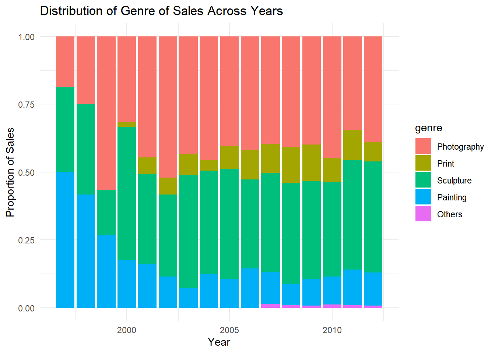

library(Rcpp)Warning: package 'Rcpp' was built under R version 4.4.2github repository # Problem 1 ## a
library(Rcpp)Warning: package 'Rcpp' was built under R version 4.4.2Define the S4 class for Rational numbers, including a validator that ensures the denominator is non-zero
setClass(
"Rational",
slots = c(numerator = "integer", denominator = "integer"),
validity = function(object) {
if (object@denominator == 0) {
stop("Denominator cannot be zero!")
}
TRUE
}
)
setGeneric("quotient", function(x, digits = NULL) standardGeneric("quotient"))[1] "quotient"setMethod(
"quotient",
signature(x = "Rational"),
function(x, digits = NULL) {
result <- x@numerator / x@denominator
# If digits argument is provided, format the result accordingly
if (!is.null(digits)) {
if (is.numeric(digits)) {
result <- format(result, digits = digits)
} else {
stop("The 'digits' argument must be a numeric value.")
}
}
return(as.numeric(result))
}
)Define the constructor
rational <- function(numerator, denominator = 1) {
new("Rational", numerator = as.integer(numerator), denominator = as.integer(denominator))
}Define the show method
setMethod(
"show",
signature(object = "Rational"),
function(object) {
if (object@denominator == 1) {
# Only display numerator if denominator is 1
cat(object@numerator, "\n")
} else {
# Otherwise display as a/b
cat(object@numerator, "/", object@denominator, "\n")
}
}
)Define the simplify method
setGeneric("simplify", function(object) standardGeneric("simplify"))[1] "simplify"setMethod(
"simplify",
"Rational",
function(object) {
gcd_value <- gcd(object@numerator, object@denominator)
object@numerator <- object@numerator / gcd_value
object@denominator <- object@denominator / gcd_value
object
}
)Define the quotient method
setGeneric("simplify", function(x) standardGeneric("simplify"))[1] "simplify"setMethod(
"simplify",
signature(x = "Rational"),
function(x) {
gcd_value <- gcd(x@numerator, x@denominator) # Using the gcd function defined earlier
new_numerator <- as.integer(x@numerator / gcd_value)
new_denominator <- as.integer(x@denominator / gcd_value)
rational(new_numerator, new_denominator)
}
)Arithmetic operations
# Addition
setMethod(
"+",
signature(e1 = "Rational", e2 = "Rational"),
function(e1, e2) {
common_denom <- e1@denominator * e2@denominator
new_numer <- (e1@numerator * e2@denominator) + (e2@numerator * e1@denominator)
rational(new_numer, common_denom)
}
)
# Subtraction
setMethod(
"-",
signature(e1 = "Rational", e2 = "Rational"),
function(e1, e2) {
common_denom <- e1@denominator * e2@denominator
new_numer <- (e1@numerator * e2@denominator) - (e2@numerator * e1@denominator)
rational(new_numer, common_denom)
}
)
# Multiplication
setMethod(
"*",
signature(e1 = "Rational", e2 = "Rational"),
function(e1, e2) {
new_numer <- e1@numerator * e2@numerator
new_denom <- e1@denominator * e2@denominator
rational(new_numer, new_denom)
}
)
# Division
setMethod(
"/",
signature(e1 = "Rational", e2 = "Rational"),
function(e1, e2) {
if (e2@numerator == 0) stop("Cannot divide by zero!")
new_numer <- e1@numerator * e2@denominator
new_denom <- e1@denominator * e2@numerator
rational(new_numer, new_denom)
}
)Define GCD and LCM
# Define GCD and LCM using Rcpp
cppFunction('
int gcd(int a, int b) {
while (b != 0) {
int temp = b;
b = a % b;
a = temp;
}
return abs(a);
}
int lcm(int a, int b) {
if (a == 0 || b == 0) return 0;
return abs(a * b) / gcd(a, b);
}
')First we create three objects.
r1 <- rational(24, 6)
r2 <- rational(7, 230)
r3 <- rational(0, 4)Then we evaluate the example code.
r124 / 6 r30 / 4 r1 + r25562 / 1380 r1 - r25478 / 1380 r1 * r2168 / 1380 r1 / r25520 / 42 r1 + r396 / 24 r1 * r30 / 24 tryCatch(r2 / r3, error = function(e) e)<simpleError in r2/r3: Cannot divide by zero!>quotient(r1)[1] 4quotient(r2)[1] 0.03043478quotient(r2, digits = 3)[1] 0.0304tryCatch(quotient(r2, digits = "avocado"), error = function(e) e)<simpleError in quotient(r2, digits = "avocado"): The 'digits' argument must be a numeric value.>simplify(r1)4 simplify(r2)7 / 230 simplify(r3)0 Here are some invalid creation examples.
tryCatch(Rational(1, 0), error = function(e) e)<simpleError in Rational(1, 0): could not find function "Rational">tryCatch(Rational("a", "b"), error = function(e) e)<simpleError in Rational("a", "b"): could not find function "Rational">library(tidyverse)── Attaching core tidyverse packages ──────────────────────── tidyverse 2.0.0 ──
✔ dplyr 1.1.4 ✔ readr 2.1.5
✔ forcats 1.0.0 ✔ stringr 1.5.1
✔ ggplot2 3.5.1 ✔ tibble 3.2.1
✔ lubridate 1.9.3 ✔ tidyr 1.3.1
✔ purrr 1.0.2
── Conflicts ────────────────────────────────────────── tidyverse_conflicts() ──
✖ dplyr::filter() masks stats::filter()
✖ dplyr::lag() masks stats::lag()
ℹ Use the conflicted package (<http://conflicted.r-lib.org/>) to force all conflicts to become errorslibrary(plotly)Warning: package 'plotly' was built under R version 4.4.2
Attaching package: 'plotly'
The following object is masked from 'package:ggplot2':
last_plot
The following object is masked from 'package:stats':
filter
The following object is masked from 'package:graphics':
layoutdf <- read.csv("df_for_ml_improved_new_market.csv")
genre_columns <- grep("^Genre", names(df))
df$Genre___Others[df$Genre___Painting == 1] <- 0
df$genre <- NA
df$genre[df$Genre___Photography == 1] <- "Photography"
df$genre[df$Genre___Print == 1] <- "Print"
df$genre[df$Genre___Sculpture == 1] <- "Sculpture"
df$genre[df$Genre___Painting == 1] <- "Painting"
df$genre[df$Genre___Others == 1] <- "Others"
df$genre <- factor(df$genre, levels = c("Photography", "Print", "Sculpture", "Painting", "Others"))
df$price_usd <- as.numeric(df$price_usd)
df$year <- as.numeric(df$year) # Plotting genre distribution over years
genre_plot <- df %>%
ggplot(aes(x = year, fill = genre)) +
geom_bar(position = "fill") +
labs(title = "Distribution of Genre of Sales Across Years",
x = "Year", y = "Proportion of Sales") +
theme_minimal()
# Display the plot
genre_plot
The plot shows that before the year 2000, the largest market share was held by painting. After that, photography emerged as the dominant genre, followed by sculpture. Since then, the market shares of these genres have remained relatively stable, with no significant changes observed.
We will create a simple interactive plot to show how the sales price in USD has changed over time.
select_top_values <- function(vec, percentile) {
val <- quantile(vec, percentile)
return(vec[vec > val])
}
save <- list()
for (y in unique(df$year)) {
prices <- df[df$year == y, "price_usd"]
save[[as.character(y)]] <-
data.frame(year = y,
price_usd = select_top_values(prices, .95))
}
arttop <- do.call(rbind, save)
artmedian <- aggregate(df$price_usd, by = list(df$year),
FUN = median, na.rm = TRUE)
names(artmedian) <- c("year", "price_usd")p <- ggplot(arttop, aes(x = factor(year), y = price_usd)) +
geom_boxplot(aes(linetype = "Boxplot"), outlier.shape = "x", outlier.size = 1) +
geom_line(aes(group = NA, linetype = "Median"), data = artmedian,
linewidth = 1.2) +
labs(title = "Changes in top 5% of prices",
x = "Year",
y = "Price in Million USD",
linetype = "") +
scale_linetype_manual(values = c("Boxplot" = "solid", "Median" = "dashed")) +
scale_y_continuous(labels = paste(seq(0, 1.4, .2), "M", sep = ""),
breaks = seq(0, 1400000, by = 200000)) +
theme(legend.position = "inside",
legend.position.inside = c(.1, .95),
legend.background = element_blank())
# Convert ggplot to an interactive plotly plot
interactive_plot <- ggplotly(p)
# Show the plot
interactive_plotPrior to 2001, the price changes were relatively small. However, after 2001, there was a rapid increase in prices, particularly between 2005 and 2006, when the price surged by more than $10,000. A significant drop in prices occurred between 2008 and 2009, followed by a period of relative stability, with prices stabilizing around $30,000.
artmedian <- aggregate(df$price_usd, by = list(df$year, df$genre),
FUN = median, na.rm = TRUE)
names(artmedian) <- c("year", "genre", "price_usd")
art975 <- aggregate(df$price_usd, by = list(df$year, df$genre),
FUN = quantile, .975, na.rm = TRUE)
names(art975) <- c("year", "genre", "price_usd")artmedian$genre <- factor(artmedian$genre, levels = rev(unique(artmedian$genre)))
art975$genre <- factor(art975$genre, levels = rev(unique(art975$genre)))
artcombine <- bind_rows(
artmedian %>% mutate(measure = "Median"),
art975 %>% mutate(measure = "97.5%")
)
p <- ggplot(artcombine, aes(x = year, y = price_usd, color = genre, linetype = measure)) +
geom_line() +
scale_y_continuous(
name = "Price in Thousands USD",
breaks = seq(0, 350000, by = 50000),
labels = paste(seq(0, 350, by = 50), "k", sep = "")
) +
scale_x_continuous(
name = NULL,
breaks = seq(1997, 2012, by = 2),
limits = c(1997, 2012)
) +
labs(title = "Changes in Price by Genre") +
scale_color_manual(values = 1:5) +
scale_linetype_manual(values = c("97.5%" = "dotted", "Median" = "solid")) +
theme(
legend.position = "inside",
legend.position.inside = c(.1, .75),
legend.background = element_blank(),
legend.title = element_blank()
)
# Convert ggplot to an interactive plotly plot
interactive_plot <- ggplotly(p)
# Show the plot
interactive_plotThe plot indicates that average prices remained relatively stable before 2000. From 2000 to 2008, there was a significant increase in prices. After the sharp decline in prices between 2008 and 2009, the average prices stabilized. Among the genres, photography had the highest prices, while sculpture exhibited the lowest and most stable prices. Additionally, print prices showed the most fluctuations over time.
Departure
library(tidyverse)
library(nycflights13)
library(data.table)
Attaching package: 'data.table'The following objects are masked from 'package:lubridate':
hour, isoweek, mday, minute, month, quarter, second, wday, week,
yday, yearThe following objects are masked from 'package:dplyr':
between, first, lastThe following object is masked from 'package:purrr':
transposeflights <- copy(flights)
airports <- copy(airports)
setDT(flights)
setDT(airports)
departure_delays <- flights[, .(
mean_departure_delay = mean(dep_delay, na.rm = TRUE),
median_departure_delay = median(dep_delay, na.rm = TRUE),
flight_count = .N
), by = origin][flight_count >= 10, ] # Filter for origin with flight_count >= 10
departure_delays <- departure_delays[airports, on = .(origin = faa)]
departure_delays <- departure_delays[!is.na(mean_departure_delay) & !is.na(median_departure_delay)]
departure_delays <- departure_delays[, .(name, mean_departure_delay, median_departure_delay)]
departure_delays <- departure_delays[order(-mean_departure_delay)]
departure_delays name mean_departure_delay median_departure_delay
<char> <num> <num>
1: Newark Liberty Intl 15.10795 -1
2: John F Kennedy Intl 12.11216 -1
3: La Guardia 10.34688 -3Arrival
result <- flights[
, .(
mean_delay = mean(arr_delay, na.rm = TRUE),
med_delay = median(arr_delay, na.rm = TRUE),
numflights = .N
),
by = dest
][
numflights >= 10
][
, faa := dest
][
airports,
on = "faa",
nomatch = 0
][
, name := fifelse(is.na(name), faa, name)
][
, .(name, mean_delay, med_delay)
][
order(-mean_delay)
]
# Print the result
print(result, nrow(result)) name mean_delay med_delay
<char> <num> <num>
1: Columbia Metropolitan 41.76415094 28.0
2: Tulsa Intl 33.65986395 14.0
3: Will Rogers World 30.61904762 16.0
4: Jackson Hole Airport 28.09523810 15.0
5: Mc Ghee Tyson 24.06920415 2.0
6: Dane Co Rgnl Truax Fld 20.19604317 1.0
7: Richmond Intl 20.11125320 1.0
8: Akron Canton Regional Airport 19.69833729 3.0
9: Des Moines Intl 19.00573614 0.0
10: Gerald R Ford Intl 18.18956044 1.0
11: Birmingham Intl 16.87732342 -2.0
12: Theodore Francis Green State 16.23463687 1.0
13: Greenville-Spartanburg International 15.93544304 -0.5
14: Cincinnati Northern Kentucky Intl 15.36456376 -3.0
15: Savannah Hilton Head Intl 15.12950601 -1.0
16: Manchester Regional Airport 14.78755365 -3.0
17: Eppley Afld 14.69889841 -2.0
18: Yeager 14.67164179 -1.5
19: Kansas City Intl 14.51405836 0.0
20: Albany Intl 14.39712919 -4.0
21: General Mitchell Intl 14.16722038 0.0
22: Piedmont Triad 14.11260054 -2.0
23: Washington Dulles Intl 13.86420212 -3.0
24: Cherry Capital Airport 12.96842105 -10.0
25: James M Cox Dayton Intl 12.68048606 -3.0
26: Louisville International Airport 12.66938406 -2.0
27: Chicago Midway Intl 12.36422360 -1.0
28: Sacramento Intl 12.10992908 4.0
29: Jacksonville Intl 11.84483416 -2.0
30: Nashville Intl 11.81245891 -2.0
31: Portland Intl Jetport 11.66040210 -4.0
32: Greater Rochester Intl 11.56064461 -5.0
33: Hartsfield Jackson Atlanta Intl 11.30011285 -1.0
34: Lambert St Louis Intl 11.07846451 -3.0
35: Norfolk Intl 10.94909344 -4.0
36: Baltimore Washington Intl 10.72673385 -5.0
37: Memphis Intl 10.64531435 -2.5
38: Port Columbus Intl 10.60132291 -3.0
39: Charleston Afb Intl 10.59296847 -4.0
40: Philadelphia Intl 10.12719014 -3.0
41: Raleigh Durham Intl 10.05238095 -3.0
42: Indianapolis Intl 9.94043412 -3.0
43: Charlottesville-Albemarle 9.50000000 -5.0
44: Cleveland Hopkins Intl 9.18161129 -5.0
45: Ronald Reagan Washington Natl 9.06695204 -2.0
46: Burlington Intl 8.95099602 -4.0
47: Buffalo Niagara Intl 8.94595186 -5.0
48: Syracuse Hancock Intl 8.90392501 -5.0
49: Denver Intl 8.60650021 -2.0
50: Palm Beach Intl 8.56297210 -3.0
51: Bob Hope 8.17567568 -3.0
52: Fort Lauderdale Hollywood Intl 8.08212154 -3.0
53: Bangor Intl 8.02793296 -9.0
54: Asheville Regional Airport 8.00383142 -1.0
55: Pittsburgh Intl 7.68099053 -5.0
56: Gallatin Field 7.60000000 -2.0
57: NW Arkansas Regional 7.46572581 -2.0
58: Tampa Intl 7.40852503 -4.0
59: Charlotte Douglas Intl 7.36031885 -3.0
60: Minneapolis St Paul Intl 7.27016886 -5.0
61: William P Hobby 7.17618819 -4.0
62: Bradley Intl 7.04854369 -10.0
63: San Antonio Intl 6.94537178 -9.0
64: South Bend Rgnl 6.50000000 -3.5
65: Louis Armstrong New Orleans Intl 6.49017497 -6.0
66: Key West Intl 6.35294118 7.0
67: Eagle Co Rgnl 6.30434783 -4.0
68: Austin Bergstrom Intl 6.01990875 -5.0
69: Chicago Ohare Intl 5.87661475 -8.0
70: Orlando Intl 5.45464309 -5.0
71: Detroit Metro Wayne Co 5.42996346 -7.0
72: Portland Intl 5.14157973 -5.0
73: Nantucket Mem 4.85227273 -3.0
74: Wilmington Intl 4.63551402 -7.0
75: Myrtle Beach Intl 4.60344828 -13.0
76: Albuquerque International Sunport 4.38188976 -5.5
77: George Bush Intercontinental 4.24079040 -5.0
78: Norman Y Mineta San Jose Intl 3.44817073 -7.0
79: Southwest Florida Intl 3.23814963 -5.0
80: San Diego Intl 3.13916574 -5.0
81: Sarasota Bradenton Intl 3.08243131 -5.0
82: Metropolitan Oakland Intl 3.07766990 -9.0
83: General Edward Lawrence Logan Intl 2.91439222 -9.0
84: San Francisco Intl 2.67289152 -8.0
85: Yampa Valley 2.14285714 2.0
86: Phoenix Sky Harbor Intl 2.09704733 -6.0
87: Montrose Regional Airport 1.78571429 -10.5
88: Los Angeles Intl 0.54711094 -7.0
89: Dallas Fort Worth Intl 0.32212685 -9.0
90: Miami Intl 0.29905978 -9.0
91: Mc Carran Intl 0.25772849 -8.0
92: Salt Lake City Intl 0.17625459 -8.0
93: Long Beach -0.06202723 -10.0
94: Martha\\\\'s Vineyard -0.28571429 -11.0
95: Seattle Tacoma Intl -1.09909910 -11.0
96: Honolulu Intl -1.36519258 -7.0
97: John Wayne Arpt Orange Co -7.86822660 -11.0
98: Palm Springs Intl -12.72222222 -13.5
name mean_delay med_delayplanes <- copy(planes)
setDT(planes)
result <- flights[planes, on = .(tailnum),
.(time = air_time / 60,
mph = distance / (air_time / 60),
model)
]
result <- result[, .(avgmph = mean(mph, na.rm = TRUE),
nflights = .N), by = model]
result <- result[order(-avgmph)][1]
result model avgmph nflights
<char> <num> <int>
1: 777-222 482.6254 4